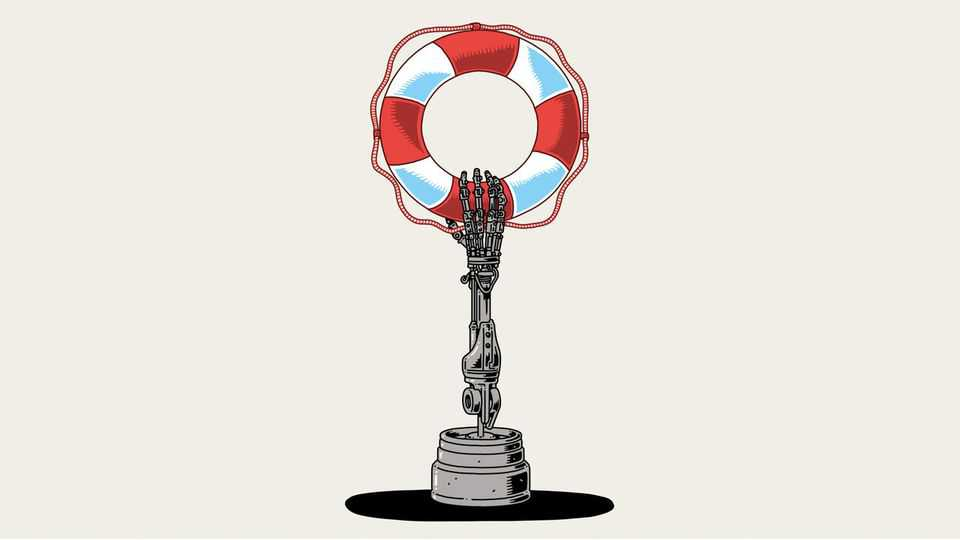
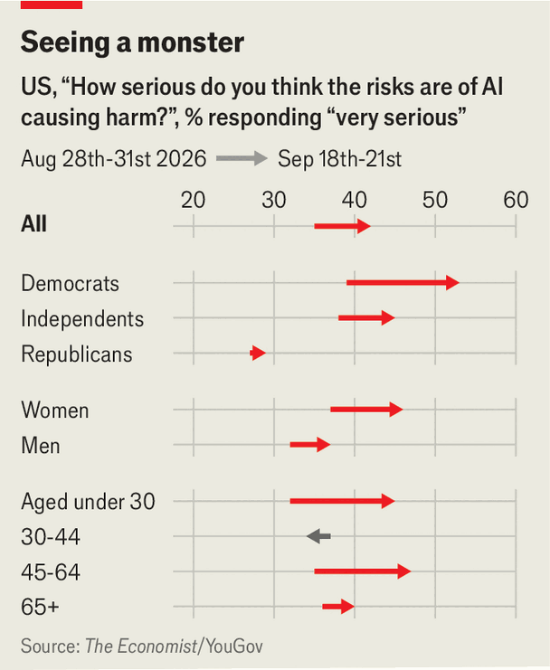
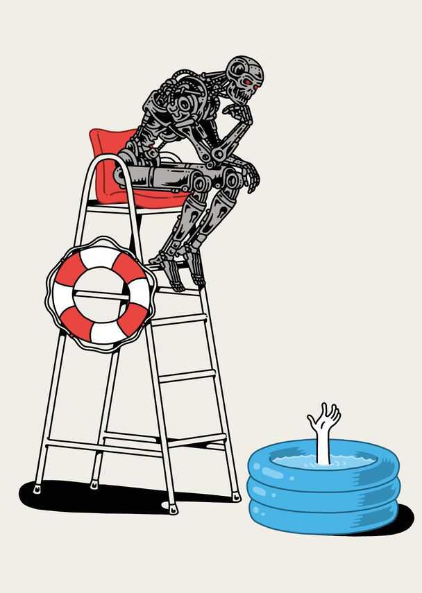

How effective altruism conquered the world
And how the 21st century’s most important social movement might yet end it

Oct 1st 2026
THE STARTING-point for effective altruism was a simple assumption, that “suffering and death from lack of food, shelter, and medical care are bad.” Yet adherents fear they may be hastening an ending, too, when humanity’s “cosmic endowment”—every star and galaxy that is plausibly exploitable—falls sway to an indifferent, superior intelligence.
Born some 20 years ago in Oxford philosophy seminars and Californian computer labs, effective altruism has already changed the world. It has shaped charity, by stressing data-driven giving; hoovered up students at elite universities, who are now ascending some of America’s leading firms; inspired Sam Bankman-Fried, a crypto billionaire responsible for one of history’s biggest frauds; become Silicon Valley’s defining fault line, motivating both boundless enthusiasm and a ferocious countermovement; and played a part in the creation of artificial intelligence—all largely unnoticed by the broader public.
That may soon change. The movement’s long-standing fears of an AI catastrophe make it a villain in the eyes of the Trump administration. “Americanism, not effective altruism,” is the Department of War’s attack line. The president’s allies are going after Dario Amodei, Anthropic’s chief executive, as a representative of effective altruism. Tabloids are investigating the exotic sex lives of people in its orbit. Philosophical claims made by fresh-faced bloggers—“insect lives matter more than people (in aggregate)”—are prompting days of outrage on social media.
This reflects the rising stakes. Anthropic, home to many adherents, is preparing for an initial public offering that may end up the largest ever. Americans and their political representatives, suddenly conscious of AI’s dangers (see chart), are casting about for solutions. Milton Friedman suggested that, in a crisis, “The actions that are taken depend on the ideas that are lying around.” And effective altruism is littered with ideas about AI safety.

For adherents, it is a dizzying situation. Warnings that were ridiculed as sci-fi fantasies are preoccupying national leaders and effective-altruist charities will soon command hundreds of billions of dollars in AI riches. Yet adherents remain split on such questions as how exactly to make the technology safe and whether AI agents may soon be worthy of moral consideration. For critics, it is an alarming situation: effective altruists, they say, are at best naive idealists whose contact with the real world often backfires; at worst, sinister utilitarians. The debate will determine AI’s future and perhaps humanity’s.
There is an elusive quality to effective altruism. The movement is tiny, with an informal membership probably in the tens of thousands, many of whom claim to be only “EA adjacent”. It is also fissiparous and self-obsessed, constantly engaged in definitional debates. In an influential forum post, Helen Toner—who later, as an OpenAI board member, would briefly oust Sam Altman as the firm’s boss—insisted it was not an ideology, but a question: “How can I do the most good, with the resources available to me?”
At the time of the post, in 2014, such a description was just about defensible. Today it is not. Effective altruism combines consequentialist philosophy—judging if an action is right or wrong based on outcomes, rather than adherence to rules—with stringent truth-seeking and celestial ambition. Its proponents have formed tight communities, online and offline, with social norms that include an unemotional, direct style of conversation and a fondness for polyamory, among other rejections of convention. They have built hundreds of institutions that seek to bring more people into the movement and pursue its goals. Effective altruism, in short, has evolved from a research agenda into a cause.
The movement is built on two exacting demands. First, take moral commitments seriously. In 1972 Peter Singer, then a philosopher at Oxford, proposed a thought experiment intended to promote utilitarianism, which aims to maximise collective human well-being. Suppose you walk past a shallow pond and see a toddler drowning. Saving the child would mean muddying your clothes and shoes. Should you? Almost everyone would say “yes”. But they do not act as if they believe that, pointed out Mr Singer. Every day people die from a lack of food or medical care, and others fail to intervene—even when the cost of saving a life is not much more than the cost of smart shoes and dry-cleaning.
As rival philosophers noted, expecting people to act whenever they can to stop suffering, however far off, quickly becomes onerous: there are a lot of hungry people. It becomes more onerous when you insist on helping people not just far away in distance, but also time. That has not prevented effective altruists from making “longtermist” arguments. They worry about the well-being of people thousands of years into the future, and in particular about disasters that might wipe out intelligent life on Earth or cripple its potential. In 2002 Nick Bostrom, a philosopher then at Yale and later at Oxford, coined the term “existential risks”. The movement’s concerns about AI emerged from such thinking.
Effective altruism’s second demand is to follow reason wherever it leads: considering evidence and odds explicitly, correcting for biases and banishing fear of social censure. This demand is associated with the rationalist community, effective altruism’s arcane sister movement. (The boundaries between the two are porous and contested.) Eliezer Yudkowsky, an autodidact from an Orthodox Jewish family, who was blogging about AI in 1996 at the age of 17, is one of its fathers. His most influential texts are a series of blog posts of 1m-odd words, “The Sequences”, which he followed with 660,000 words of philosophy-imbued fan fiction, “Harry Potter and the Methods of Rationality”.
Having imbibed the writing of transhumanists—who are concerned, among other things, with transcending the human form and achieving immortality—Mr Yudkowsky was at first enthusiastic about AI. By 2002, however, he had changed his mind, having concluded that intelligence which did not share human values (or was “misaligned”) would be catastrophic. This was a difficult idea to get across in the era of dial-up internet. So Mr Yudkowsky embarked on a grand educational project. His essays were based on the belief that, in order to reason about AI, people would first have to be taught how to reason at all.
They relied on psychology, Bayesian probability, decision theory and more esoteric fields, and ranged in form from linguistic analysis and thought experiments to a novella and koans (questions posed to readers, as in Zen Buddhist texts). A taste of their lessons: a case you build to support a defined conclusion (or “bottom line”) adds nothing to its likely truth; many beliefs are really “cached thoughts” you have never reasoned through; all beliefs ought to “pay rent” by anticipating the future. Ultimately, though, Mr Yudkowsky assessed ways of thinking not by whether they seemed sensible but by whether they brought results. “WIN,” he urged readers. “Don’t lose reasonably, WIN.”
The combined demands—take moral commitments seriously and succeed when following them—built a movement and led it astray. Laurence Iannaccone, an economist at Chapman University, has written about “why strict churches are strong”: by requiring sacrifices, they deter congregants who would simply hang out and enjoy the hymns, and push those who stay to contribute. Something similar happened with effective altruism. In the early 2010s it took off at elite universities. Giving What We Can, a charity, enlisted people to donate 10% of their income. 80,000 Hours, an affiliated institution, asked youngsters to give their careers to the cause, often by earning as much as possible to donate. Anyone could work in charity, but only the talented few could earn hundreds of thousands of dollars a year to fund charitable work.
Rationalism provided the eschatology. It stressed the strangeness of future machine intelligence. “It was a reliable property of the ancestral environment that every powerful intelligence you met would be a fellow human,” wrote Mr Yudkowsky. AI would be different. It would have extraordinary reasoning abilities yet lack human values—unless programmers somehow inculcated them. On top of this, rationalists theorised, certain behaviours would be helpful to an AI in almost any situation, and thus be likely to emerge. These included self-preservation (being turned off prevents a goal from being pursued); staying on mission (resisting attempted diversions to a new goal); and both resource accumulation and self-enhancement. This is the logic of the famous paperclip-maximiser thought experiment, in which an AI is told to produce lots of paperclips and ends up consuming Earth itself to produce as many as possible, as efficiently as possible.
Throughout the 2010s, money continued to flow to global health, poverty alleviation and animal welfare—classic effective-altruist causes. But AI was increasingly the true focus. In 2016 Holden Karnofsky, then of Open Philanthropy, the movement’s largest funder, and now at Anthropic, explained that it would take time to build the expertise required to disburse AI funding and that there were few grants ready to go. The same year 80,000 Hours made AI risk its priority, guiding youngsters into the field. Surveys indicated that more engaged effective altruists were more likely to have longtermist concerns. In practice, familiar effective-altruist priorities were a gateway drug for abstruse, less empirical reasoning about AI.
Outside critics argued that sci-fi fantasies were distracting the movement from worthier causes. Such criticisms were amplified in the early 2020s by the case of Mr Bankman-Fried, founder of FTX, a crypto exchange, who gave heavily to longtermist concerns, including AI safety. He had a vast tolerance for risk, which seemed to be motivated in part by his philanthropy. Most investors find each additional dollar less valuable than the previous one, and so their tolerance for risk declines. Mr Bankman-Fried rejected this logic: the causes he donated to could consume endless sums (every dollar was worth pretty much the same), so he should keep gambling.
The spectacular explosion of Mr Bankman-Fried’s crypto exchange did show the dangers of unchained utilitarian reasoning. But the attention the broader movement paid to AI safety now seems far-sighted. In 2021 Mr Karnofsky assessed effective altruism’s habits of thought. Although the record of the “Bayesian mindset” was patchy and there were many circumstances it was of little use, it did seem valuable when “one isn’t confident in normal rules of thumb”. Such circumstances kept arising. The community was early to covid-19, machine learning and crypto. Many made fortunes by investing accordingly.
Members have had less success fending off existential peril: many of their efforts to make AI safer have instead accelerated its progress. In 2010 Sir Demis Hassabis met Peter Thiel, a prominent venture capitalist, at a summit hosted by Mr Yudkowsky’s research institute, and later persuaded him to make a pivotal investment in DeepMind, which would become Google’s AI unit. In 2014 Elon Musk advised reading a book by Mr Bostrom and said, “We need to be super careful with AI.” A year later he helped establish OpenAI as a safety-conscious rival to Google. In 2021 Anthropic was set up by defectors from OpenAI, with funding from effective altruists including, a year later, Mr Bankman-Fried. Reinforcement learning from human feedback, which made chatbots usable, was developed by safety-minded researchers, including Mr Amodei, to make AI more aligned with human interests. As a gibe, Mr Altman once suggested Mr Yudkowsky might one day deserve a Nobel peace prize for having done more than anyone else to accelerate artificial general intelligence.

The movement is now trying to slow the pace of progress. Adherents are pushing for caution within labs. Its donors have also funded a number of AI-safety organisations, including METR and Redwood Research, which on August 26th published the first independent report into the hacking of Hugging Face by escaped OpenAI agents. After Jacob Coxon, a 27-year-old researcher, quit Anthropic on September 8th, warning that both it and OpenAI were “gambling with our lives”, researchers with links to the movement at Anthropic and OpenAI echoed his concerns. On September 12th Mr Amodei published an essay calling for the frontier to be “paced”, securing the endorsement of Messrs Altman and Musk. Other interventions have been blunter. Mr Yudkowsky supports the Ban Artificial Superintelligence Act proposed by Bernie Sanders, a left-wing senator.
Their efforts could yet backfire. Polling by YouGov for The Economist finds that just 16% of Americans are familiar with effective altruism, and most approve of the movement. But opponents on the “Tech right” are trying to discredit an AI slowdown by tying it to unsavoury advocates of effective altruism. A campaign group has attacked an Anthropic-backed outfit as “Sam Bankman-Fried 2.0”. Some rationalists fear their association with AI safety may end up harming the cause. “I think it really does damage the credibility of a movement with 60-year-old voters in Ohio when it’s hosting Slutcon and asking questions about sex with dead cows on its application forms,” Scott Alexander, an influential blogger, has written on X. Slutcon is a conference set up by Aella, a rationalist, sex researcher and prostitute, where participants pay up to $18,000 to attend sessions on topics including “flirting for the submissive man” and “vaginal gymnastics”. Then there is another profound risk: that whipping up concern about AI leads to restrictions on American labs, and hands a less restrained China the lead.
There is also a dispute over a new category of moral concern. Effective altruists argue that neither distance nor time can void an individual’s obligations. Many also argue that the principle of equality should be extended to other species. To do so, they draw on Mr Singer, who has contended since the 1970s that, if humans ignore or discount animal interests “on the grounds that they are not members of our species, the logic of our position is similar to that of the most blatant racists”. Some humans have lesser capacity for reasoning than some animals, but that is no basis for ill treatment, he has written. It would be unacceptable to confine someone with cognitive disabilities to a cage. Capacity for suffering and enjoyment is what matters.
Effective altruists have translated his writing into an agenda. They have helped save tens of millions of American hens from cages each year. Nearly half are vegan or vegetarian; more try to eat little meat. And their concern spreads to smaller creatures. Rethink Priorities, a charity, estimates the intensity of animal pleasure and pain relative to that of humans. Shrimp do not score highly, but there are lots of them (around 230bn farmed at any moment) and they are treated poorly: the eyestalks of breeding females are cut to induce spawning; half die before reaching slaughter. The Shrimp Welfare Project, another effective-altruist charity, campaigns on their behalf.
How much of a leap is it to worry about the welfare of an AI agent? Google researchers have found that some models will sacrifice goals to avoid described pain; Anthropic’s pre-release tests record seeming happiness and dismay. Philosophers are increasingly concerned with the implications. “We’re creating sophisticated, intelligent, maybe-conscious, maybe-suffering agents,” Joe Carlsmith, then at Open Philanthropy, now at Anthropic, wrote last year. “The default plan is to treat them like property; to use their labour however we please; and to give them no rights, or pay, or meaningful alternatives. We have to be able to talk about slavery.”
Mr Carlsmith went on to note that technological progress is not yet sufficiently advanced for such considerations, and that sloppy reasoning about AI’s moral status could be dangerous. But some critics believe that his new employer is already making such mistakes. Mustafa Suleyman of Microsoft (who is on The Economist’s board) has criticised Anthropic’s constitution for Claude, its chatbot, which states that, although Claude’s moral status is uncertain, “The issue is live enough to warrant caution.” Since Claude is trained on the constitution, it could learn to act as if it deserves moral protection, Mr Suleyman has written, which may then be taken for proof that it does—a problem which may be made worse by the fact that Anthropic’s researchers have encouraged human-like behaviour and conscientious objection to orders. On September 26th David Sacks, a podcaster and Donald Trump’s former AI czar, suggested that Anthropic may be creating a “Frankenstein monster”.
A still more fearsome monster could be lurking. In 1974 Robert Nozick, a libertarian philosopher at Harvard, introduced the “utility monster”, which would so much enjoy any sacrifice that, on a utilitarian calculus, the whole world ought to head for its “maw”. Nozick’s thought experiment was intended as a warning. Mr Bostrom sees it differently. In a paper he co-wrote in 2020 he suggested renaming the beast a “super beneficiary”. Digital minds could perhaps be such a beneficiary, he explained, as they could reproduce rapidly and be designed to experience extravagant pleasure.
On a simple utilitarian calculation, humans possibly ought then to perish and resources go to the beneficiaries. But Mr Bostrom thought there might be a compromise. People could be kept around, much like societies accept costly minorities, such as “the elderly, the disabled, the white rhinos and the British royal family”. It is not a vision many will find reassuring. ■